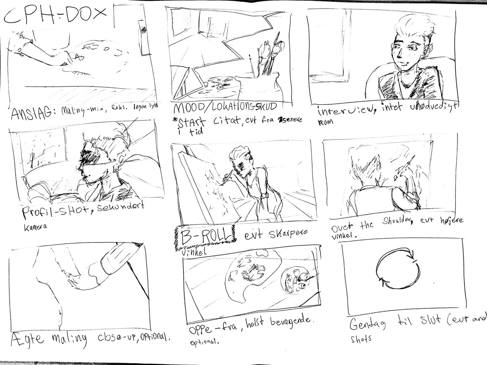
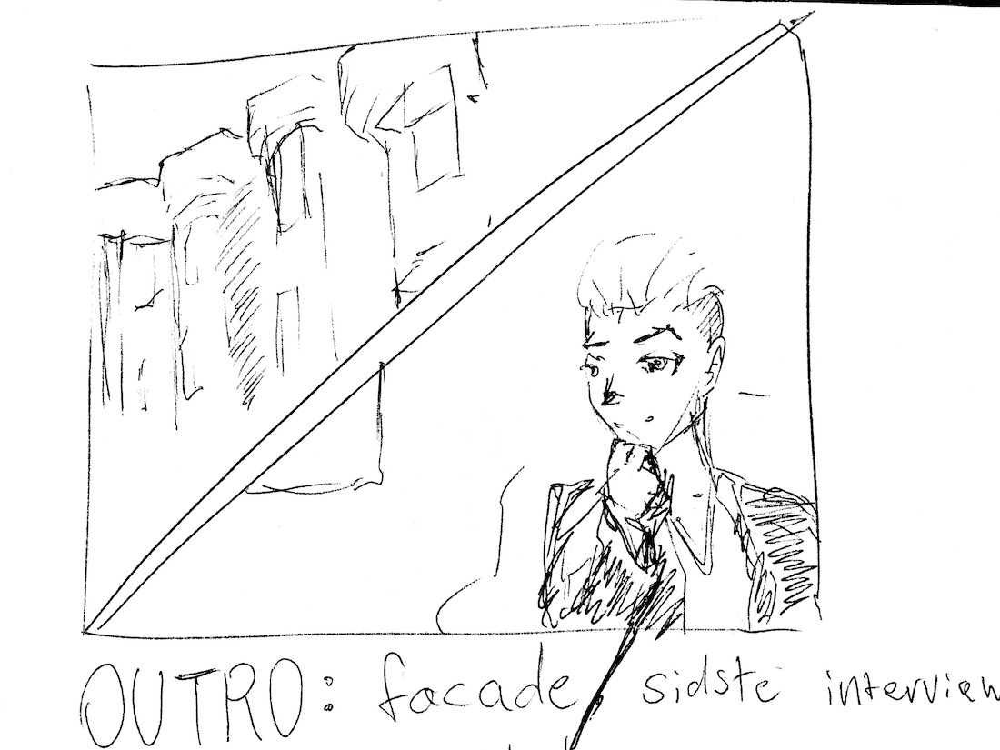

Introduktion
Everyday Project, der er skabt af CPH:DOX ville have en kortfilmsdokumentar inden for ét af to emner: Selvoptaget og Demokrati. Vi valgte Demokrati.
Carolines stedmor er kunstner og maler samfundsaktuelle malerier fra rundt omkring i verden. Den rørende historie om deres tur til flygtningeøen Lesbos var vi nødt til at dokumentere.
"Jeg ville også sælge mit happengut, hvis min familie var truet. - Og hvem ville ikke det?!" - Mathilde Fenger
Idé
Storyboard


Det færdige produkt
Videoen blev kåret til bedste dokumentar ved CPH:DOX konkurrencen på KEA MMD E17.
Video: Demokratiets Kunst
Kompetencer
I forbindelse med denne opgave har jeg, helt eller delvist, opnået kompetencer inden for følgende:
- Dramaturgi
- Interviewteknik
- Kameraføring
- Udvidet Premiere Pro med videoeffekter
- Colorgrading